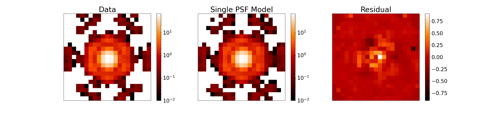
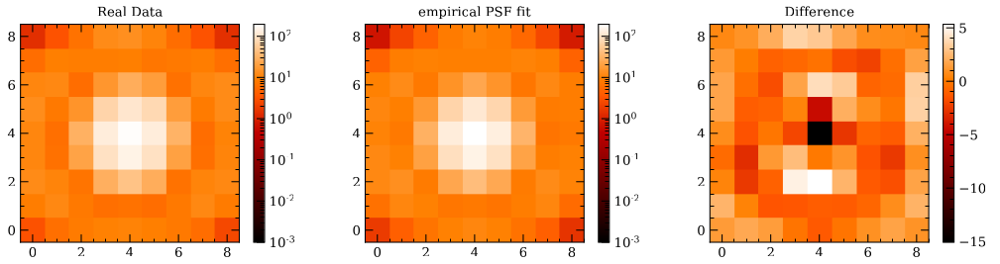
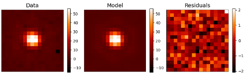
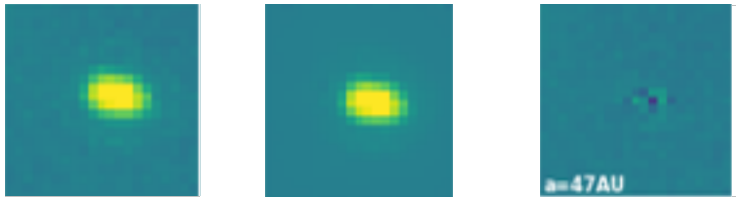
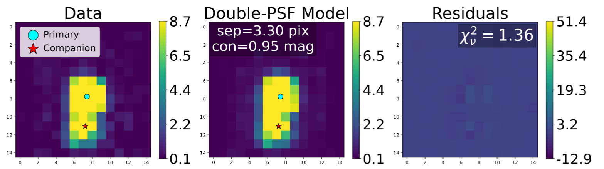
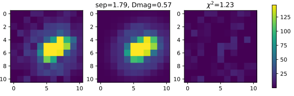
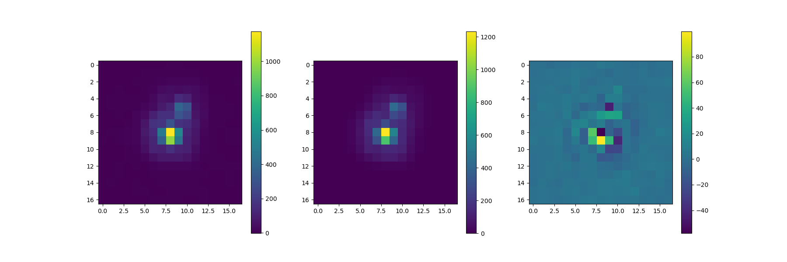

{kind=link}
{kind=link}
{kind=link}
{kind=link}
{kind=link}
{kind=link}
{kind=link}

The first identification of a turnover in the initial mass function within a stellar population, NGC 2024. See link for NASA Press Release.
In several papers, I have designed, utilized, and characterized my double PSF-fitting for various instruments and science cases. Currently, my code is being used across seven JWST and HST instruments: NIRCam, NIRISS, MIRI, ACS/WFC, WFC3/IR, WFC3/UVIS, and WFPC2/PC. In each of the following images, the left panel is a cutout from the data, the middle panel is the empirical PSF model, and the right panel is the residual. To date, the sensitivity of my technique has been characterized with rigorous injection and retrieval analyses, showing the ability to resolve between 0.5-1λ/D given sufficient signal for NIRCam, ACS/WFC, and WFC3/IR. Current programs are characterizing the sensitivity of MIRI, WFC3/UVIS, and WFPC2/PC with the expectation of publication of all three in 2026.
JWST/NIRCam:
JWST/NIRISS:
JWST/MIRI:
HST ACS/WFC:
HST WFC3/IR:
HST WFC3/UVIS:
HST WFPC2/PC:

The first identification of a turnover in the initial mass function within a stellar population, NGC 2024. See link for NASA Press Release.

Detection of the second Y-Y dwarf binary system ever, WISE1935-1546, using JWST/MIRI probing the lowest mass binaries in the Galaxy. See link for paper.

Resolving companions below the diffraction limit with HST WFC3/IR. See link for paper.
For inquiries about collaborations, details about my research and outreach, or general questions, please reach out to me through email.